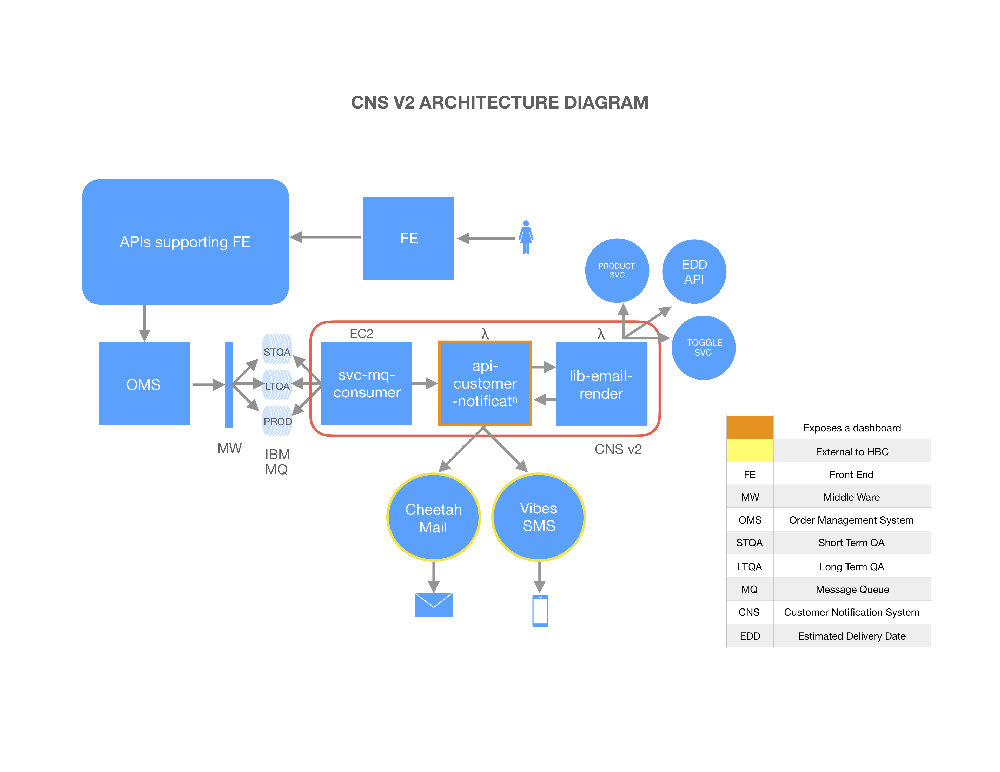

Email Engineering recently migrated all transactional emails to CNS v2. This was a slow migration as CNS v1, although, referred to as a micro service was anything but one! We inherited CNS v1 towards the end of last year and started migration to CNS v2 in the beginning of this year. In doing so, we followed what could be labeled as a flavor of Strangler pattern. In this blog, I will share how we accomplished this task and also provide a detailed view of the new CNS (CNS v2).
CNS
HBC Customer Notification Service (CNS) processes and sends transactional emails for Saks, Saks Off 5th and Lord and Taylor banners. CNS consumes events from Order Management System (OMS), renders the event payload into emails and sends them via CheetahMail. CNS also sends SMS notifications via Vibes SMS for applicable events and users. With CNS v2 and consequently the breakdown of v1 monolith into true micro services, the acronym CNS now stands for Customer Notification “System”.
CNS v2
CNS v2 is developed for the Cloud and is 100% hosted on AWS. It breaks down the v1 monolith into three micro services, namely- svc-mq-consumer, api-customer-notification and lib-email-render. The v2 architecture and the three new components are explained below.
Architecture

Svc-mq-consumer
This component is an IBM MQ message handler/consumer. After polling for messages from the queue, it POSTs the message payload to the api-customer-notification’s /send_email endpoint.
Api-customer-notification
This component, written as a Lambda function, exposes the CNS API. After receiving a /send_email request from the consumer, the api invokes the lib-email-render Lambda function for rendering it into HTML. On receiving the HTML response, the api’s thin Email Gateway wrapper sends the HTML payload with relevant data to CheetahMail. The api stores both the message payload received from the consumer and the final rendered email HTML in Aurora MySql DB. It also exposes this data as a powerful dashboard for troubleshooting and QA testing. As the dashboard is exposed to all HBC and is used by multiple teams, it is gaining popularity and traffic and now merits to exist on its own as a web component in the coming days.
Lib-email-render
The lib Lambda function holds all the business logic needed to render an email HTML from an event message. Most of the business logic from CNS v1 is migrated to this component.
Strangling CNS v1
Phase 1 - Using CNS v1 As Message Consumer and Repeater
Once CNS v2 started taking shape, the team discussed steps to phase out CNS v1. First, we decided that this should be a banner by banner transition. This would help in streamlining the team’s efforts and also prevent business impact across banners if something were to break. Next, we agreed on using CNS v1 as simply a message consumer, which would receive the message off the IBM MQ queue and send the payload to CNS v2’s api-customer-notification component. This meant that our two core components (api and lib) were in play and the team could focus its efforts on developing and testing those.
We launched both Saks and Lord and Taylor on CNS v2 in Production with this setup on Apr 5.
Phase 2 - Using svc-mq-consumer As Message Consumer for O5
Once Saks and Lord and Taylor were on CNS v2 (using CNS v1 as message consumer), we focused our attention to migrate Saks Off 5th to CNS v2. By now, the two new CNS v2 components (api and lib) were stable in Production (for Saks and Lord and Taylor). We took some time to enhance CloudWatch logging and metrics for both these new components. We also enhanced the api dashboard in this time to facilitate troubleshooting and added features such as email preview and resend.
At this time, the team felt confident to undertake a full migration for Saks Off 5th, including replacing CNS v1 with our brand new svc-mq-consumer component. Since CNS v1 was not used in this flow, we had to shut down CNS v1 completely for Saks Off 5th. This was essential as the underlying infrastructure- the queues, OMS - were common to both CNS v1 and v2 and having v1 linger around could lead to unexpected results.
O5 migrated completely on CNS v2 in Production on Aug 14.
Phase 3 - Shutting Down CNS v1 and Clean up
By now, all three CNS v2 components were taking live Production traffic.The team took some time to put CW logging and metrics in the consumer component. Finally, we decided it was time to shut down CNS v1 for good. Time to draw the curtains, roll the credits! It was great knowing you, CNS v1!
Three teams- Engineering, QA and Infra, joined forces to co-ordinate this effort. It was crucial that old CNS v1 Docker instances were removed, new CNS v2 components were enabled and their connectivity with queues etc. were established and verified. Also, the end to end flow from order placement on website to receiving emails was to be verified. The Go pipelines that were used to build and deploy code for CNS v1 were to be paused and subsequently disabled (so that no one is able to resurrect CNS v1 even by mistake). Finally, the nagios alerts for CNS v1 were disabled and its Mongo DB servers decommissioned.
CNS v1 was shut down for all banners on Sep 6.
CNS v2 CI and CD
CNS v2 follows Continuous Integration (CI) and is set up for Continuous Delivery (CD), but the latter is currently disabled. Two pieces need to be in place for us to push code to Production with a high degree of confidence- A reliable infrastructure, with high availability and scalability, and a development workflow with adequate checks and measures that guarantees only high quality, bug free code reaches Production. While hosting all of CNS v2 in AWS takes care of the robust infrastructure piece, it is the development workflow that the team is working to continuously improve.
When we inherited CNS v1, the unit tests’ code coverage was barely 40%. Today, CNS v2 has close to 75% code coverage (and is increasing every day). The CloudWatch (CW) alerts are set up by banner and by email type and are integrated with PagerDuty. We are in the process of improving our metrics in CW so that if incidents happen, we are able to quantify their impact with precision. We are also integrating our Lambda deployments with New Relic so as to provide greater visibility to SRE and Ops teams. CW Logging is already in place for all components. We feel that we are almost there and should be able to enable CD in the next couple of weeks.
Final Thoughts
While we are forever in debt of the old CNS, the new CNS opens up a world of possibilities. All transactional emails across all banners are getting a fresh, modern look as I write this, made possible with new found powers of CNS v2. Bay emails migration to CNS follows soon. Business (Marketing) loves the new CNS and they feel emboldened to try out new features and products in the coming days and months. The team has a spring in its stride and has so much to look forward to. Happy days lie ahead filled with all good things!